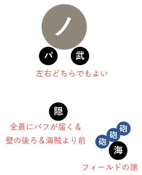
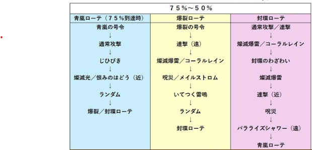

燦滅のノクゼリア
強さ2 行動表へジャンプ
- 植物系
- 強さ1:炎0.4倍、氷0.2倍、風0.4倍、雷0.4倍、土0.4倍、光0.2倍、闇0.2倍
- 強さ2:? 0.15倍?
- 構成
- 隠者 ヒーラー
- パラディン ヤリ
- 海賊 or 占い師
- 武道家
- 立ち位置 
- 各職行動
- 隠者
- トライ維持
- ヒーリング維持
- これがないと耐えれない。隠者以外はヒーラー無理。。かも
- 反撃は大砲の遠くで発動させること
- メゼみたいにフィールドの端っこぐるぐるしなくていい。真ん中を往復でも。
- タゲは大きく迂回して内側から当たるようにする。連撃やブレスを１人受けしつつ、壁役のアミュレットを消費しないようすると精霊力に余裕が生まれる。この当たり方なら燦滅光を内側に逸らして壁の人に当てないようにできる。 正面から当たって燦滅光だった場合、壁役が避けられず死ぬ。。
- パラ
- 海賊
- 武道家
- 必要装備
- 色々あるけど呪文耐性あればいい。ブレスはフバーハで。
強さ1
行動
・100%~75%
- 特に無し？
・75%~
- 青嵐の号令→通常攻撃→じひびき→（青床注意）→燦滅光→【爆裂or封還orランダムモードへ】
- ランダム→爆裂or封還モードへ
- 爆裂の号令→通常攻撃→燦滅光→いてつく雷鳴→呪災 / メイルストロム→【封還モードへ】
- 通常 / 連撃→燦滅爆雷→封還のわざわい→燦滅爆雷→燦然たる息吹→連撃→呪災→【青嵐モードへ】
青嵐モード
ランダムモード
爆裂モード
封還モード
・50%~
- 爆裂の号令→通常攻撃→燦滅爆雷 / コーラルレイン→いてつく雷鳴→呪災 / メイルストロム→【封還モードへ】
- 通常 / 連撃→燦滅爆雷→封還のわざわい→燦滅爆雷→パラライズ→連撃→呪災→【青嵐モードへ】
- 青嵐の号令→通常攻撃→じひびき→(燦滅光)→【爆裂or封還モードへ】
爆裂モード
封還モード
青嵐モード
・25%~
- イバラの牢獄→燦滅爆雷→イオマータ→【青嵐モードへ】
- 青嵐の号令→通常攻撃→じひびき→（青床注意）→燦滅光/パラライズ→【爆裂or封還モードへ】
- 爆裂の号令→連撃→いてつく雷鳴→燦滅爆雷/レイン→呪災/メイルストロム→【封還モードへ】
- 連撃→燦滅爆雷→封還のわざわい→燦滅爆雷→燦然たる息吹→連撃→呪災→【牢獄モードへ】
牢獄モード
青嵐モード
爆裂モード
封還モード
強さ2
行動
・100%~75%
- 特に無し？
・75%~
- 青嵐の号令→通常攻撃→じひびき→（青床注意）→燦滅光/はどう→【爆裂or封還orランダムモードへ】
- ランダム→爆裂or封還モードへ
- 爆裂の号令→連撃→レイン/爆雷→呪災/メイルストロム→いてつく雷鳴→【封還モードへ】
- 通常/連撃→レイン/燦滅爆雷→封還のわざわい→爆雷→連撃→呪災→パラライズ→【青嵐モードへ】
青嵐モード
ランダムモード
爆裂モード
封還モード

・50%~
- 最初は青嵐か封還ローテ
- イオマータ→青嵐の号令→レイン/爆雷→燦滅光/はどう→パラライズ【爆裂or封還モードへ】
- 爆裂の号令→連撃→パラライズ→燦滅光/はどう→【封還モードへ】
- 通常/連撃→燦滅爆雷→封還のわざわい→燦滅爆雷→連撃→呪災→パラライズ→【牢獄モードへ】
- イバラの牢獄→燦滅爆雷→【青嵐モードへ】
青嵐モード
爆裂モード
封還モード
牢獄モード
・25%~
- イバラの牢獄→燦滅爆雷→いてつく雷鳴→【青嵐モードへ】
- 青嵐の号令→爆雷→パラライズ【爆裂or封還モードへ】
- 爆裂の号令→メイルストロム/呪災→燦滅光→ブレス→いてつく雷鳴→【封還モードへ】
- 連撃→燦滅爆雷→封還のわざわい→連撃→ブレス→呪災→パラライズ【牢獄モードへ】